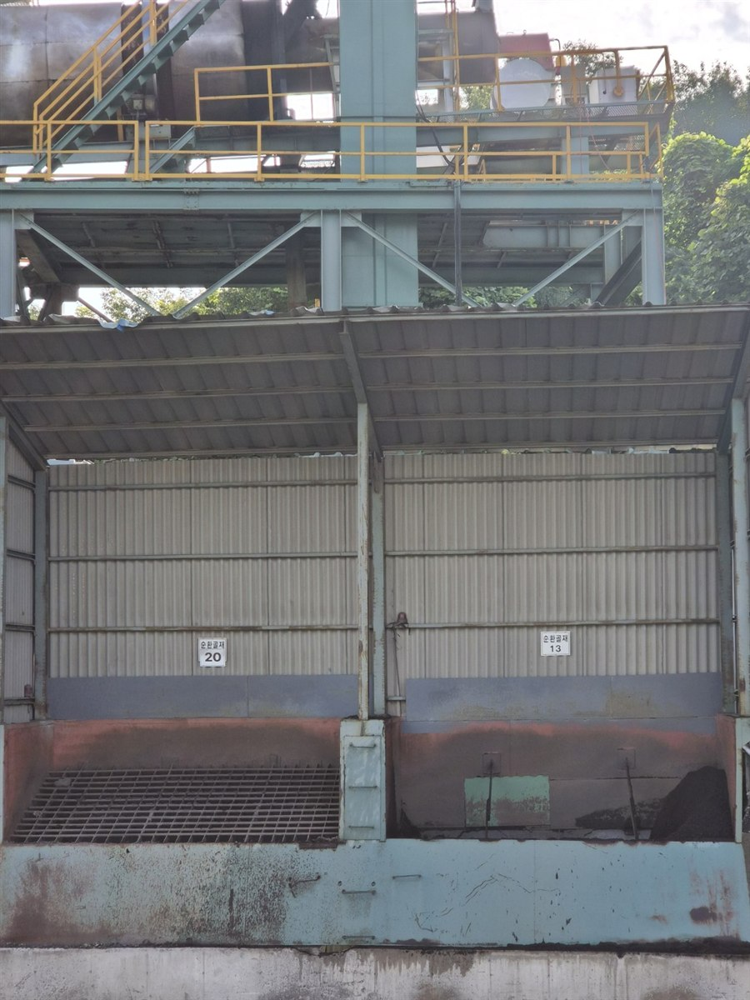

개요
덕화실업은 1960년 창업 이래 아스팔트(아스콘) 산업 한 길에서, 신뢰와 품질로 대한민국 도로를 다져온 울산의 대표 아스콘 생산기업입니다.
일반가열아스콘·순환가열아스콘은 신규 골재와 순환골재를 각각 가열·혼합해 생산하는 전통적인 제품 라인으로, 기층용·중간층용·표층용까지 폭넓게 공급하고 있습니다.
순환상온아스콘은 폐아스콘 순환골재를 70~80% 사용해 상온에서 시공하는 저탄소 친환경 신제품으로, 자원순환형 기업으로 나아가는 덕화실업의 미래 사업모델입니다.
덕화실업은 품질·환경·안전이라는 세 가지 원칙을 바탕으로, 앞으로도 지속가능한 도로 인프라를 만들어가겠습니다.

CEO 인사말
덕화실업(주) 홈페이지를 찾아주신 고객 여러분께 진심으로 감사드립니다.
저희 덕화실업은 1960년 설립 이래 한결같이 아스팔트 콘크리트(아스콘) 생산의 한 길을 걸어오며, 신뢰를 최우선 가치로 삼아왔습니다.
최근에는 폐아스콘 순환골재를 활용한 저탄소 친환경 제품 「순환상온아스콘」 생산을 시작하며, 자원순환형 기업으로서 새로운 도약을 이어가고 있습니다.
앞으로도 품질과 환경, 안전이라는 세 가지 원칙을 지키며 고객 여러분과 함께 성장하는 덕화실업이 되겠습니다.
감사합니다.
대표이사 한봉희
※ 위 인사말은 임시로 작성된 초안입니다. 대표님 확인 후 원하시는 문구로 교체해 드립니다.
연혁
아스콘 산업에 첫발을 딛다
1960 – 19791960.03삼인산업 설립 (자본금 2백만원, 울산광역시 남구 여천동 887-16번지)
1972.06군납수출업자 등록
1979.08유기석 사장 취임
덕화실업으로 새출발하다
1995 – 20031995.05울주아스콘공장 매입 → 덕화실업(주)로 이전
1995.06공장등록
1995.08부산울산경남아스콘공업협동조합 가입
1995.12한국산업규격 표시(㉿) 획득
1996.06울산광역시 남구 여천동 887-16번지 소재 공장 매각
1996.09본점 이전 (울산광역시 울주군 언양읍 반곡리 978-4번지), 안명주 사장 취임
2003.06안명주 사장 사임, 유기석 사장 취임
자원순환과 환경경영을 시작하다
2011 – 20192011.03재생아스콘 생산설비 증설, 폐기물 최종재활용업·건설폐기물 수집·운반 허가증 획득
2011.07환경표지인증서 획득
2013.11건설폐기물 중간처리업 허가증 획득
2014.04유기석 사장 사임, 자홍준 사장 취임
2015.01한국산업규격(㉿) 표시허가 → 단체표준 전환
2018.07복합악취 방지시설(소석회투입방식) 설치
친환경 혁신, 새로운 도약
2020 – 20252020.04자홍준 사장 사임, 한봉희 대표 취임
2022.07특정대기유해물질 방지설비 설치
2025.06순환상온 설비 증설
2025.12순환상온 환경인증서 획득